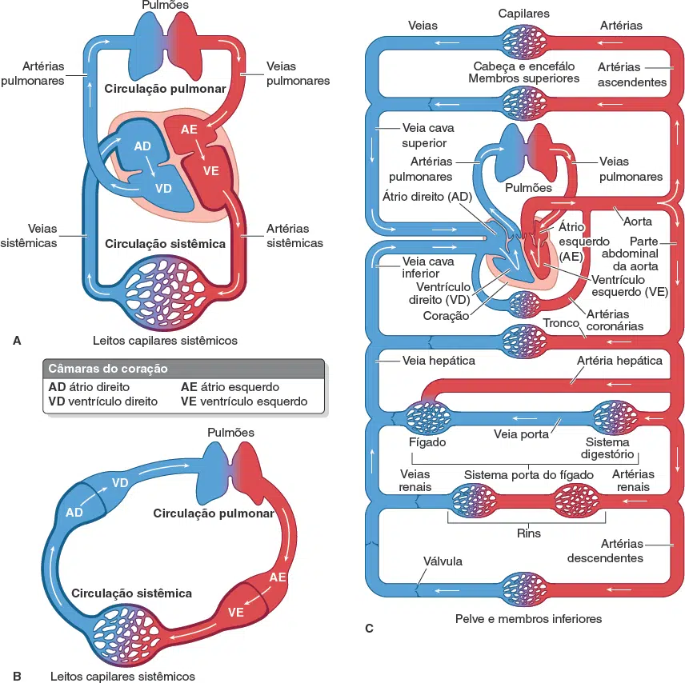
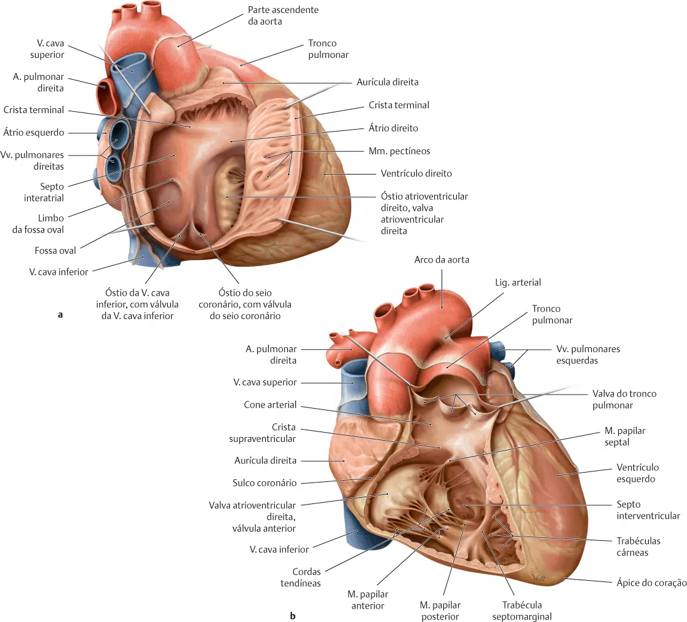
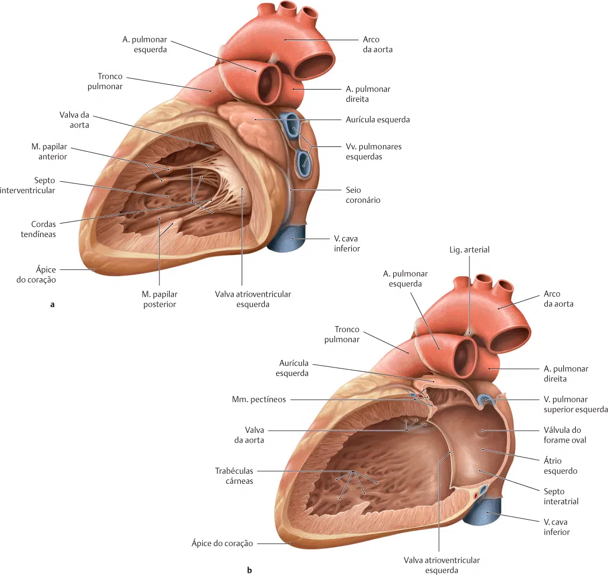
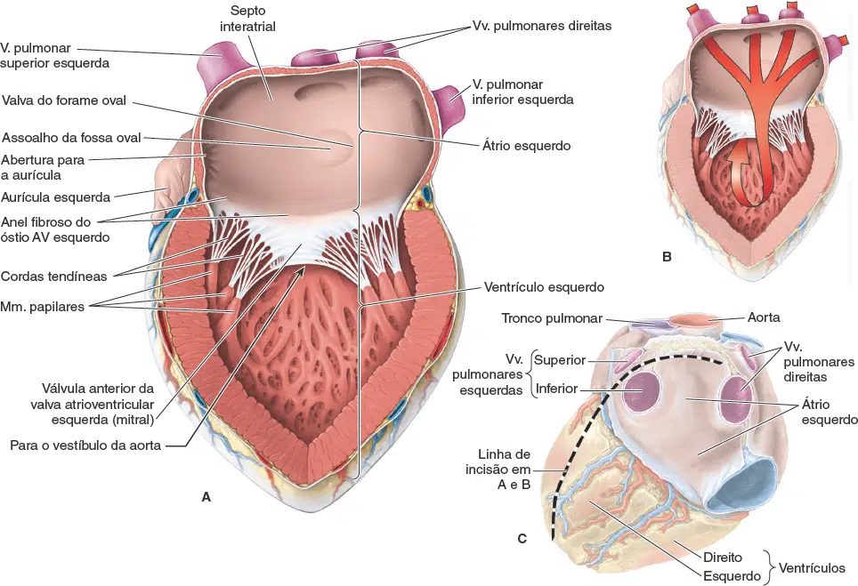

O coração consiste em quatro câmaras: os dois átrios e os dois ventrículos.
O sangue que retorna ao coração entra nos átrios e é bombeado para os ventrículos.
Do ventrículo esquerdo, o sangue passa para a aorta e entra na circulação sistêmica.
Do ventrículo direito, entra na circulação pulmonar pelas artérias pulmonares.

Átrios
Átrio direito
O átrio direito recebe o sangue com pouco oxigênio das veias cavas superior e inferior e das veias coronárias.
Bombeia este sangue através do óstio átrioventricular direito (guardado pela valva tricúspide ou átrioventricular direita) para o ventrículo direito.
Na posição anatômica, o átrio direito forma a borda direita do coração.
Estendendo-se da porção ântero-medial da câmara está a aurícula direita – uma bolsa muscular que atua para aumentar a capacidade do átrio.
A superfície interior do átrio direito pode ser dividida em duas partes, cada uma com uma origem embriológica distinta, essas duas partes são separadas por uma crista muscular chamada crista terminal (uma delimitação do músculo pectíneo onde se localiza o nó sino-atrial):
Seio das veias cavas: localizado posteriormente à crista terminal.
Esta parte recebe sangue das veias cavas superior e inferior.
Tem paredes lisas e é derivado do seio venoso embrionário.
Átrio propriamente dito – localizado anteriormente à crista terminal e inclui a aurícula direita.
É derivado do átrio primitivo e tem paredes musculares rugosas formadas por músculos pectíneos.
O seio coronário recebe sangue da maioria das veias cardíacas. Abre-se no átrio direito entre o orifício da veia cava inferior e o óstio atrioventricular direito.

Figura A = átrio direito / Figura B = ventrículo direito.
Átrio esquerdo
O átrio esquerdo recebe sangue oxigenado das quatro veias pulmonares e o bombeia através do orifício atrioventricular esquerdo (guardado pela valva mitral, bicúspide ou átrioventricular esquerda) para o ventrículo esquerdo.
Na posição anatômica, o átrio esquerdo forma a borda posterior (base) do coração.
A aurícula esquerda se estende do aspecto superior da câmara, sobrepondo-se à raiz do tronco pulmonar.
A superfície interior do átrio esquerdo pode ser dividida em duas partes, cada uma com uma origem embriológica distinta:
Porção de influxo – recebe sangue das veias pulmonares.
Sua superfície interna é lisa e é derivada das próprias veias pulmonares.
Porção de fluxo – localizado anteriormente e inclui a aurícula esquerda.
É revestido por músculos pectíneos e é derivado do átrio embrionário.

Figura A = ventrículo esquerdo / Figura B = átrio e ventrículo esquerdo.
Ventrículos
Ventrículo direito
O ventrículo direito recebe sangue desoxigenado do átrio direito e o bombeia através do orifício pulmonar (guardado pela valva semilunar pulmonar) para a artéria pulmonar .
É de forma triangular e forma a maioria da borda anterior do coração.
O ventrículo direito pode ser dividido em uma porção de entrada e saída, que são separadas por uma crista muscular conhecida como crista supraventricular.
Porção de Influxo
O interior da entrada do ventrículo direito é coberto por uma série de elevações musculares irregulares, chamadas trabéculas cárneas.
Eles dão ao ventrículo uma aparência de ‘esponja’ e podem ser agrupados em três tipos principais:
Cumes – ligados ao longo de todo o seu comprimento de um lado para formar sulcos ao longo da superfície interior do ventrículo.
Pontes – ligadas ao ventrículo em ambas as extremidades, mas livres no meio.
O exemplo mais importante desse tipo é a banda moderadora, que se estende entre o septo interventricular e a parede anterior do ventrículo direito.
Tem uma importante função condutora, contendo os ramos do feixe direito.
Pilares (músculos papilares) – ancorados por sua base aos ventrículos.
Seus ápices estão ligados a cordões fibrosos (cordas tendíneas), que por sua vez estão presos às três cúspides da valva tricúspide.
Ao contrair, os músculos papilares “puxam” as cordas tendíneas para impedir o prolapso dos folhetos valvares durante a sístole ventricular.
Porção de fluxo (Cone arterioso)
A porção de saída (que leva à artéria pulmonar) está localizada no aspecto superior do ventrículo.
É derivado do bulbus cordis embrionário.
É visivelmente diferente do restante do ventrículo direito, com paredes lisas e sem trabéculas carneas.
Figura A = átrio direito / Figura B = ventrículo direito.

Ventrículo esquerdo
O ventrículo esquerdo recebe sangue oxigenado do átrio esquerdo e o bombeia através do orifício aórtico (guardado pela valva semilunar aórtica) para a a. aorta.
Na posição anatômica, o ventrículo esquerdo forma o ápice do coração, bem como as bordas esquerda e diafragmática.
Muito parecido com o ventrículo direito, ele pode ser dividido em uma porção de influxo e uma porção de fluxo de saída.
Porção de Influxo
As paredes da porção de entrada do ventrículo esquerdo são revestidas por trabéculas cárneas, conforme descrito com o ventrículo direito.
Há dois músculos papilares presentes que se ligam às cúspides da valva mitral.
Porção de fluxo
A parte de fluxo do ventrículo esquerdo é conhecida como vestíbulo aórtico.
É de paredes lisas, sem trabéculas cárneas, e é um derivado do bulbus cordis embrionário .
Figura A = ventrículo esquerdo / Figura B = átrio e ventrículo esquerdo.
